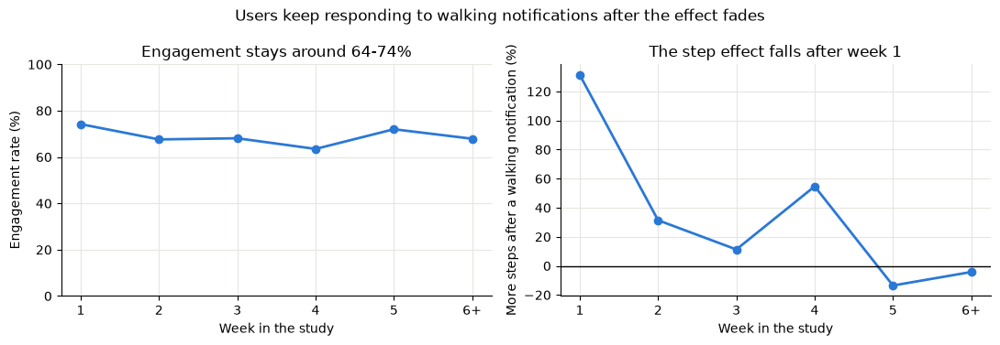
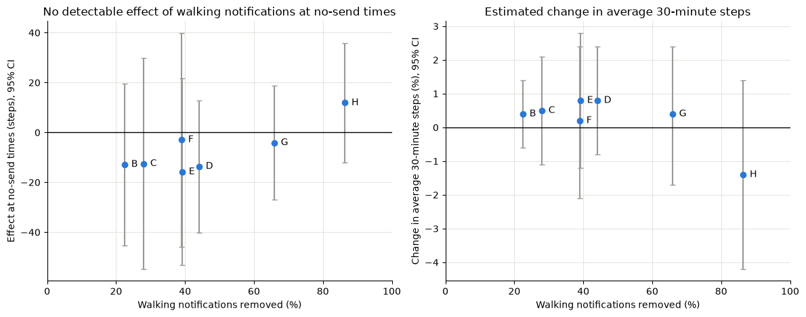

01Figure

02Goal
Does a response mean a notification worked? Engagement, such as taps or feedback, is easy to measure, but it does not necessarily show whether users actually became more active. Moreover, irrelevant or poorly timed notifications may cause users to mute notifications or even delete the app. Using data from a study in which each notification was randomly delivered or withheld, this project asked:
- When and for whom do walking notifications increase step counts?
- Does engagement reflect changes in step counts?
- Which notifications show no detectable effect, and how much could notification volume be reduced by removing them?
03Methodology & Summary
- Data: Public HeartSteps V1 data from 37 adults over approximately six weeks. Participants faced five decision points per day, with notifications randomized for delivery at each point with a probability of 0.6. Half of the notification opportunities were designated for walking notifications (6,331 decision points analyzed).
- Preparation: Log-transformed skewed step counts, cleaned weather error codes, and grouped 228 location labels. Checked that randomization worked as designed: send rates were 0.56–0.61 across time slots, locations, days, weather and study weeks (design: 0.6).
- Effect analysis: Re-estimated the published model using GEE, reproducing the paper's main finding. Then estimated effects across time slots, days, locations, user characteristics, and study weeks. Effects were estimated on log(steps + 0.5), as in the original paper. Percentage changes therefore reflect relative differences on the transformed scale, not changes in arithmetic mean step counts.
- Engagement: Measured engagement as the share of notifications receiving any recorded response (positive feedback, negative feedback or snooze). Excluded notifications without response records (22.5% of those sent) from this calculation.
- Policy evaluation: Developed seven notification rules using information available before each decision point (time slot, day, study week and a sign-up question) and compared each with the existing randomized policy. The rules differed from the randomized policy only at decision points where they would suppress a notification. I therefore estimated the effect of the walking notifications that each rule would skip (the effect potentially forgone) and the corresponding change in 30-minute step counts on the log scale.
- Robustness: Repeated all analyses using two different approaches to handling missing step counts.
04Results
| Rule (evaluated on past data) | Walking notifications removed | Estimated change in 30-min steps (95% CI) |
|---|---|---|
| Weekdays, no morning commute | 44% | −0.7% (−3.4 to +2.1) |
| First 4 weeks only | 39% | +1.0% (−2.0 to +4.0) |
| New fitness-app users only | 39% | −0.3% (−3.6 to +3.0) |
| Weekday lunch only | 86% | −3.6% (−8.2 to +1.3) |
Compared against the current policy, which randomly delivers a notification with a probability of 0.6 at each available decision point. Estimated changes are reported on the log scale and averaged across all available decision points. Anti-sedentary notifications remain unchanged.
- The effect faded over time. A model assuming a linear decline estimated a +59% effect of all notifications on the first day, with the estimated effect approaching zero around day 29.
- Timing may matter. The largest estimated effect of walking notifications occurred at weekday lunchtime (+76%), while no clear effect was detected during the morning commute or on weekends. However, differences across situations were not statistically significant.
- Engagement did not track the effect. Users continued responding to walking notifications even when the estimated effect was close to zero.
- Some notifications showed no detectable effect. Notifications that the weekday rule would skip had an estimated effect of +5% (95% CI: −14% to +30%), with no statistically significant effect. The most restrictive rule, which sends notifications only at weekday lunchtime, would also exclude decision points where notifications may be effective

05From Analysis to Decision
- Test a weekday lunch-to-evening rule. In a retrospective evaluation, this rule would have sent 44% fewer walking notifications, with an estimated change of −0.7% in 30-minute step counts (95% CI: −3.4% to +2.1%). Because a decrease of up to 3.4% cannot be ruled out, the rule should be tested in a new experiment before implementation.
- Measure behavioral impact, not just taps. Retain a small randomized holdout in which notifications are withheld, allowing the effect of sending notifications to be monitored over time.
- Validation plan: Randomly assign new users to either the current policy or the proposed rule. Use daily and 30-minute step counts as primary outcomes, and notification muting and dropout as secondary outcomes.
- Limitations: The study included only 37 participants, drawn from a highly educated population, and was conducted in 2015–16. Most differences across situations and user groups were not statistically significant. In addition, the notification rules were developed and evaluated using the same dataset.
06Code
The full analysis, code and figures are in the GitHub README.